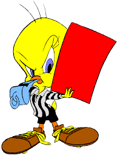

Contiene reglas específicas
Existen reglas en un juego que quienes juegan reconocen, ya sea antes de jugar o durante el juego mismo. Ante dichas reglas, quienes juegan realizan acciones que tienen consecuencias específicas. Estas acciones representan una realidad, que el personaje pueda moverse y pasar niveles, pelear y muchas otras cosas, todo gracias a que un jugador o jugadora manipulan un control.
Imaginemos nuevamente un juego como el de Mario Bros. Las reglas nos dicen que si presionamos sobre un botón específico de un comando o control, Mario realiza una acción. Por ejemplo, si presionamos el botón que señala hacia la derecha, Mario camina hacia la derecha de la pantalla (avanza).

volver...